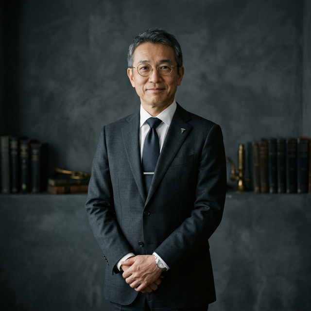
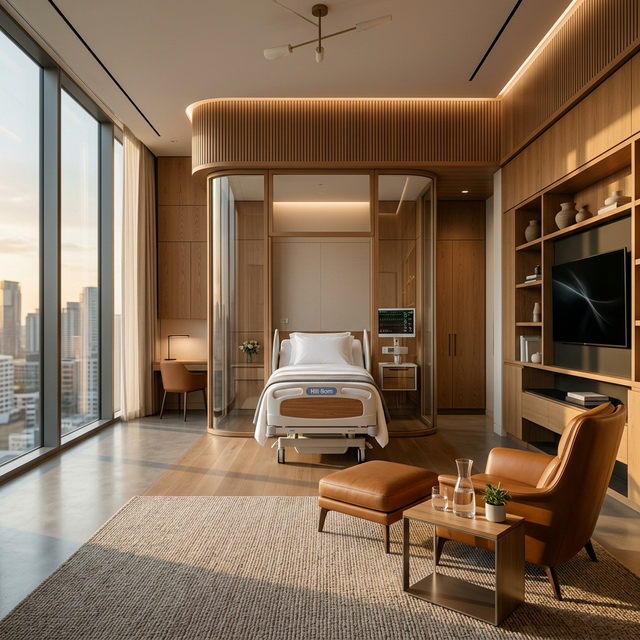

数十载深耕医学前沿，以严谨治学态度推动中国脊柱外科微创技术发展。
FACS（美国外科医师学院院士）
Mayo Clinic 访问学者
发表 SCI 论文 120 余篇
主持国家自然科学基金重大项目 5 项
中华医学会骨科分会 常委
国际脊柱畸形研究学组 (ISG) 成员
牛教授常年致力于复杂脊柱畸形的机制研究与临床干预。在国际国内多个高规格学术会议中担任主席及特邀讲者，致力于将最前沿的医学成果转化为患者的临床收益。

运用独创术式与智能化导航系统，实现更高维度的手术安全与精准度。
常规应用 O-arm 术中三维影像与导航系统，将置钉准确率提升至极限，最大程度避免神经副损伤。
摒弃传统大面积剥离的开放手术，以肌间隙入路保留背部核心肌肉群，术后恢复期缩短 60%。
摒弃冰冷的传统就医环境，我们为您提供具有极高私密性的五星级诊疗空间。

医疗的极简主义，是将复杂留给医生，将宁静与尊贵留给患者。
每一台手术背后，都是一个重新站立挺拔的家庭故事。
患者术前Cobb角达75度，通过改良微创矫形术式，仅耗时3小时完成三维矫正。术后第三天即可下地行走，现已顺利考入理想舞蹈学院。
辗转多家医院拒收的极重度椎管狭窄伴两次手术失败史患者。牛教授团队凭借三维打印导航导板，成功实施微创减压内固定翻修术。
我们提供全生命周期的管家式医疗服务体系，尊享高效、私密、专业的首诊体验。
将过往影像学资料发送至加密邮箱，由专家团队进行初步评估。
专享不低于 30 分钟的深度一对一交流时间，制定个体化方案。
国际部专属通道预约床位，术前完成全部高级复核检查。
专属个案管理师进行术后康复指导与无限期随访跟踪。
为保障服务质量，特需门诊采取严格的全预约制。
扫码添加 VIP 专属医疗管家客服